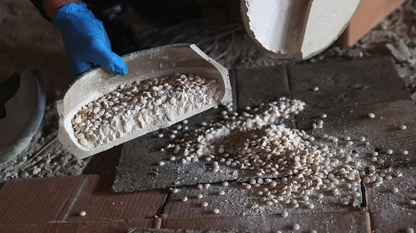
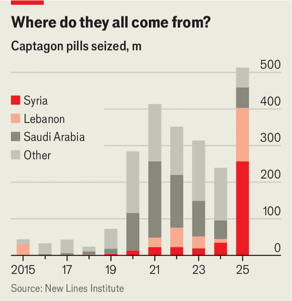

Jul 09, 2026 05:22 AM

Among bashar al-assad’s many crimes as Syria’s dictator was turning his country into a narco-state. Captagon, an amphetamine, became Syria’s largest export. Mr Assad’s neighbours resented his role as drug-pusher-in-chief. To their relief, Ahmed al-Sharaa, Syria’s new president, seems eager to stem the flow of captagon in the region. But as a result, the trade is becoming more decentralised.
Captagon, also known as fenethylline, was developed in the 1960s to treat hyperactivity in children and narcolepsy. In 1986 it was banned internationally because it was addictive. Today poor labourers use it to fuel long shifts. Some people take it to suppress hunger. Traumatised soldiers self-medicate with it. The Gulf elite use it as a party drug.
It is a lucrative trade. A pill costs cents to produce but may sell for $25 in Saudi Arabia. The global trade may be worth as much as $10bn. The un says between 2019 and 2025 as much as 80% of global seizures originated in Syria.

As part of his efforts to win international legitimacy and convince outsiders to unlock reconstruction funds, Mr Sharaa has cracked down on the trade. In the first year of his rule his forces seized over 500m pills and dismantled 16 industrial laboratories. In June last year Anas Khattab, the interior minister, declared that captagon was no longer being produced in Syria.
He spoke too soon. Over the past year Syrian authorities have seized over 80m pills. Some are Assad-era stockpiles. But new production plants are being built, too. Most are in Sweida, a southern province dominated by Druze militias that have clashed with government forces. Remnants of the Fourth Armoured Division, an elite army unit led by Mr Assad’s brother that oversaw the state’s labs, have fled there and started making the pills again. “Sweida 24”, a local news outlet, reports that 12-15 labs operate in the province.
Much of what is produced in Sweida is smuggled into Jordan, the only overland route to markets in the Gulf. Syria and Jordan share over 360km of desert borderlands and a web of tribal trade routes. Interceptions along the border have risen almost four-fold since the Druze-led National Guard took control of the province in July last year. In January Jordan and Syria set up a joint security committee to tackle the trade in drugs and arms. They also deployed more forces to the border. In May Jordan conducted its fifth round of air strikes on production facilities in Sweida. Officials say they were in co-ordination with Syrian authorities. Smugglers are adapting by using gps-guided balloons loaded with pills, which Jordanian forces shoot down, with Mr Sharaa’s blessing.
Production is spreading. Hizbullah, the Iran-backed militia in Lebanon, started making captagon in 2006 to replenish its coffers after a war with Israel, which gouged its finances. It has turned to the drugs business once again. In the past six months a quarter of all captagon seized by Syrian authorities has come from Lebanon, says Charles Lister, an analyst. In the past year Lebanese authorities have raided three laboratories in Baalbek, near the Syrian border. They also caught smugglers trying to get production equipment into the Bekaa Valley, a Hizbullah redoubt. A year ago a joint Iraqi-Lebanese operation shut a captagon laboratory in the valley, said to be one of the region’s largest.
Labs have been found in Kuwait and Egypt. In February last year a factory making about 100,000 pills per hour was seized in Sudan in territory previously held by the Rapid Support Forces, a paramilitary group. Last June Yemeni authorities seized 1.5m captagon pills being moved from Sanaa, controlled by the Houthi rebels, to Saudi Arabia. This May Indian authorities raided a production network spanning the country, a first for South Asia.
Captagon can lead to heart and brain damage. But the Middle East remains a ravenous consumer. The disruptions in supply are driving up street prices, so users are turning to crystal methamphetamine, an even more destructive stimulant. The region’s appetite for cheap synthetic highs shows no sign of abating. ■
Sign up to the Middle East Dispatch, a weekly newsletter that keeps you in the loop on a fascinating, complex and consequential part of the world.